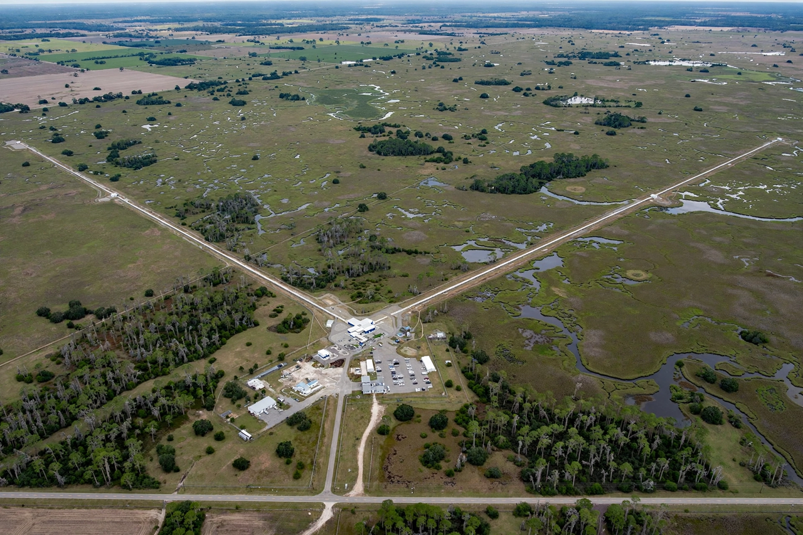

The detection
Each LIGO detector is an L-shaped interferometer with 4-kilometre arms; passing gravitational waves stretch and squeeze the arms by far less than the width of a proton, measured by laser light. The first detection, GW150914 from two merging black holes, was announced in February 2016 and led to the 2017 Nobel Prize in Physics for Weiss, Barish and Thorne.
Observing runs
LIGO observes in runs (O1, O2, O3, O4…) alongside Virgo in Italy and KAGRA in Japan, publishing open data and alert streams so telescopes worldwide can chase the sources; the catalogue now holds hundreds of candidate and confirmed events, mostly black-hole mergers, as recalled.
LIGO Scientific Collaboration
The LSC is the international collaboration of more than a thousand scientists who build, operate and analyse data from the detectors; ligo.org is its public home, with news, publications and education resources.